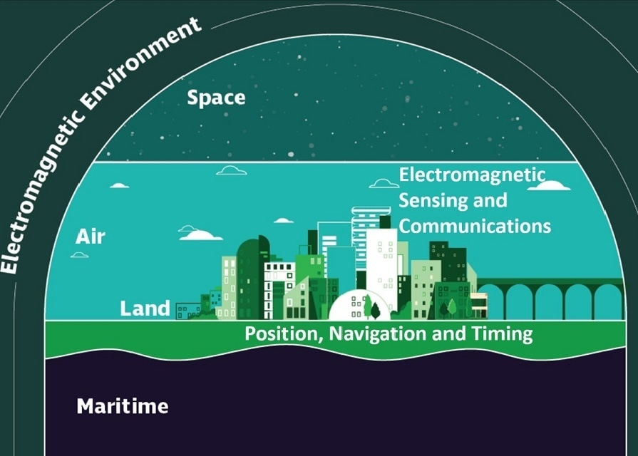

Nowcasting pedestrian flow is crucial for urban management and transit.
In a crisis, this real-time understanding is critical for saving lives.
But effectiveness depends entirely on sensor data that is often incomplete.
To develop a resilient spatio-temporal nowcasting model that can accurately predict urban pedestrian flow, even with incomplete or missing sensor data.
Graph Neural Networks (GNNs) for Spatial Dependencies.
They naturally model the irregular, network-based structure of a city's sensor grid.Temporal Self-Attention for Time Dependencies.
It allows the model to weigh the importance of past events differently, capturing complex patterns like morning rush hour vs. midday lulls.Case Study & Experimental Design
Case Study & Experimental Design
Case Study & Experimental Design
Case Study & Experimental Design
Case Study & Experimental Design
Case Study & Experimental Design
Case Study & Experimental Design
MAE: ~3.0 people
MSE: 19.0
MAE: ~4.2 people
MSE: 39.0
M1: MRes Beginning
M2: MRes Completion
M3: PhD Proposal
M4: DSTL Del. 1
M5: Paper/Objective 1
M6: DSTL Del. 2
M7: Paper/Objective 2
M8: Paper/Objective 3
M9: Paper/Objective 4
M10: DSTL Del. 3
M11: Thesis Sub.
M12: Funding Ends
CUPUM 2025
Key TakeawaysInnovation Fest 2025
Key TakeawaysChallenge Week 2025
Key TakeawaysTowards Situational Awareness of Urban Pedestrian Flows
GISRUK 2024Quality-aware wireless sensor networks using deep-learning for real-time urban planning
CUPUM 2025Quality-aware wireless urban sensor networks using deep-learning
Journal of Big Data (Resubmission)Turing Enrichment Scheme at the Turing Institute
Oct 2025 - Jun 2026Spatial Data Science Conference (SDSC) at Columbia New York
Oct 2025Operating in the Future Electromagnetic Environment (OFEME) with DSTL
Nov 2025
To understand our model's predictions, we use a "Knowns vs. Unknowns" framework. This helps clarify what data the model uses in different scenarios.
This is the actual, historical data. It's not a prediction, but the "correct answer" we use to evaluate the model's performance.
| Node Type | Input Data (Past) | Target Data (Future) | Framework |
|---|---|---|---|
| All Nodes | Historical traffic data | Actual future traffic data | Known Knowns |
The model's standard forecast, where it has access to complete historical data from all nodes in the network.
| Node Type | Input Data (Past) | Target Data (Future) | Framework |
|---|---|---|---|
| Sensor Nodes | Full historical data | Predicted by the model | Known Knowns |
| Target Nodes | Full historical data | Predicted by the model | Known Knowns |
Simulates a data outage at a specific node to test the model's resilience and ability to infer missing information.
| Node Type | Input Data (Past) | Target Data (Future) | Framework |
|---|---|---|---|
| Neighboring Nodes | Full historical data | Predicted by the model | Known Knowns |
| Failed Node (Target) | No historical data (masked) | Predicted by the model | Known Unknowns |
This table connects the framework to specific operational situations, demonstrating the model's capabilities.
| Scenario | Location Status | Incoming Data? | Model's Task | Data Framework |
|---|---|---|---|---|
| 1 | Previously Unrecorded | No | Imputation + Forecasting | Uses neighbor Known Knowns to predict target's Known Unknowns. |
| 2 | Previously Recorded | No (Failure) | Imputation + Forecasting | Same as above; relies on spatial context from neighbors. |
| 3 | Previously Recorded | Yes (Normal) | Forecasting | Uses Known Knowns from the target and its neighbors. |
| 4 | Previously Unrecorded | Yes | Forecasting | Treats the new sensor as a standard node using its Known Knowns. |